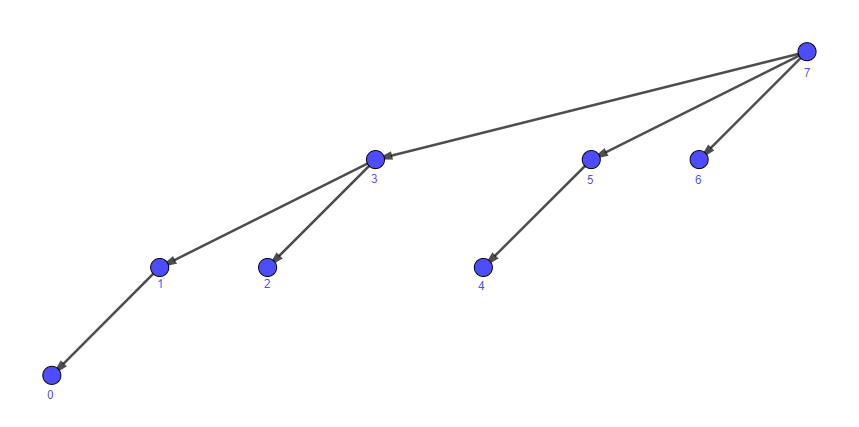

Дерево Фенвика
Дан массив размера n, необходимо выполнять две операции:
upd(pos, val)- прибавить к элементу на позиции pos значение val;get(pos)- вывести сумму на отрезке[0; pos].
Построим дерево на n вершинах по следующему правилу: ребро (u, v) существует тогда и только тогда,
когда v = u | (u + 1).

Посмотрим на вершину u. Пусть вершина v - потомок u, имеющий наименьший номер. Будем хранить
t[u] как сумму на отрезке [v; u]. Заметим, что v = u & (u + 1) (где & означает "побитовое И"),
это пригодится в будущем.
{kind=link}
Запрос обновления
Чтобы сделать upd(pos, val), необходимо обновить значение t[u] для всех u, являющихся
предком pos. Чтобы просматривать всех предков, достаточно подниматься по рёбрам дерева с помощью операции
pos = pos | (pos + 1). Например, при обновлении вершины 1 мы посетим вершины 1, 3, 7;
при обновлении вершины 4 - 4, 5, 7.
void upd (int pos, int val) {
while (pos < n) {
t[pos] += val; // обновили сумму поддерева t[pos]
pos |= pos + 1; // перешли в предка pos
}
}
Запрос суммы
Чтобы сделать get(pos), необходимо найти ответ для [pos & (pos + 1); pos], затем решить задачу для
отрезка [0; pos & (pos + 1) - 1] и полученные ответы сложить. Например, при нахождении суммы на отрезке
[0; 5] мы должны взять в качестве ответа сумму t[5] + t[3], а для [0; 7] - t[7].
int get (int pos) {
int result = 0;
while (pos != -1) {
result += t[pos]; // прибавили к ответу поддерево t[pos]
pos &= pos + 1; // перешли в самого левого потомка
pos--; // перешли в вершину левее
}
return result;
}
Время работы
Посмотрим на обе операции, выполняющиеся при запросах:
u = u | (u + 1)эквивалентна замене первого нулевого бита числа u на единицу. Например, 1100101 превратится в 1100111, а если применить операцию ещё раз - в 1101111.v = v & (v + 1) - 1эквивалентна следующей последовательности действий:- взять число u, пусть у него k первых битов равны едиинице, а следующие m битов равны нулю;
- если m = 0, то заменить u на -1. Иначе заменить k+m первых битов в числе u на единицы, а следующий бит после них - на ноль.